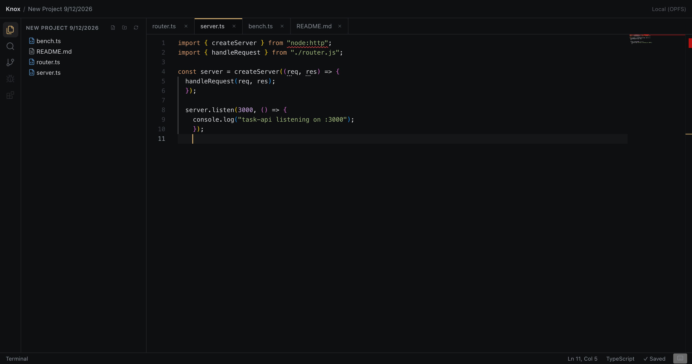
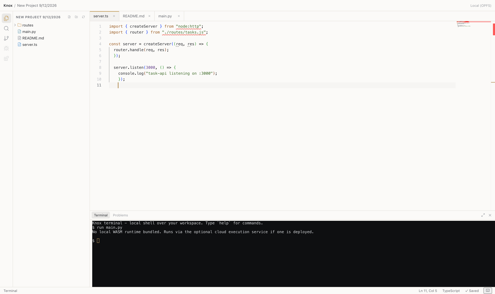

A real IDE,
quietly in your browser.
Real files. Real Git. Real terminal. Nothing to install, nothing to sign up for.


What's real
Not a demo. Not mocked panels.
- Editor
- The real Monaco editor — the same one behind VS Code. A genuine TypeScript language service, not a reimplementation.
- Filesystem
- OPFS-backed, persistent, and yours — no upload, no sync required to start working.
- Git
- isomorphic-git in a worker. Commit, branch, diff, push, pull — a real Source Control panel.
- Terminal
- A real shell with readline editing, history, and Tab completion — not a fake prompt.
- Execution
- JavaScript and TypeScript run locally. Python, C, C++, Java, Go, and Rust run in a sandboxed container when you need a real compiler.
- AI
- Bring your own key. Streams straight from your browser to your provider — never proxied through a server.